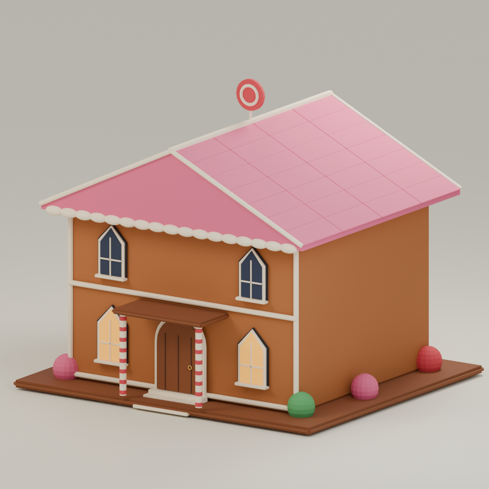
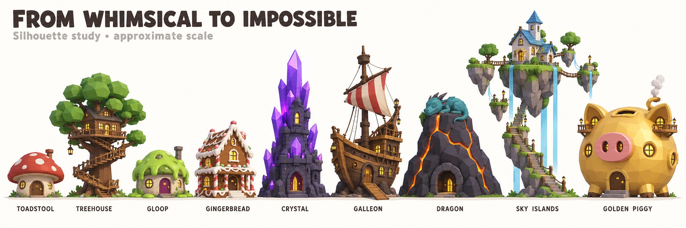
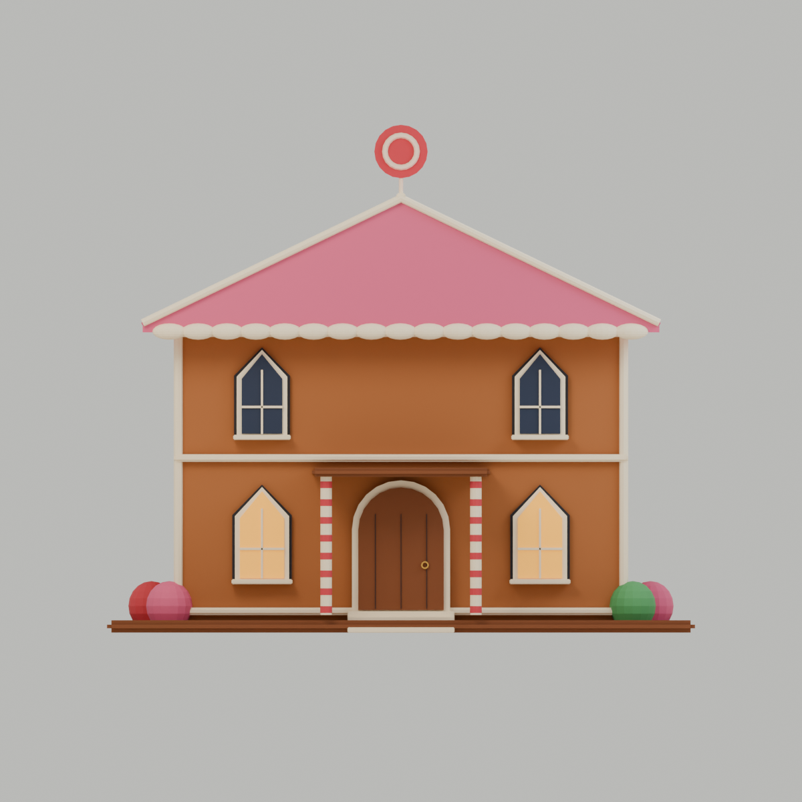
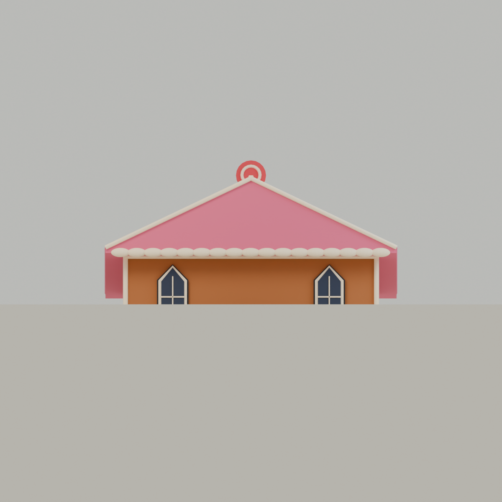

← All exterior modelsSEASONAL MODEL
Gingerbread Manor (seasonal)
33.00 × 29.80 × 28.50 studs · 22 meshes · 13,144 triangles
SEASONAL ASSET ONLY. This file does not approve the unresolved permanent 8M candy registry entry. Sale/availability rules were not changed.

Actual Blender model
Saved concept reference
Front view
Low-angle study · not a live Studio photographEditable Blender file · Roblox FBX · Import handoff · Verification
Studio import, collision, lighting, effects and mobile performance remain pending.